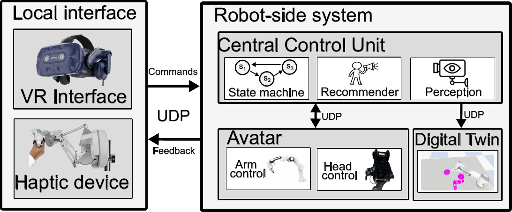
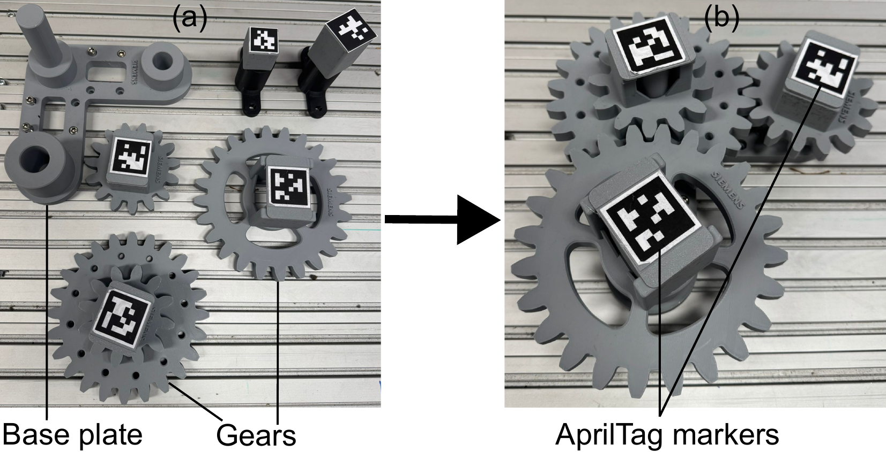
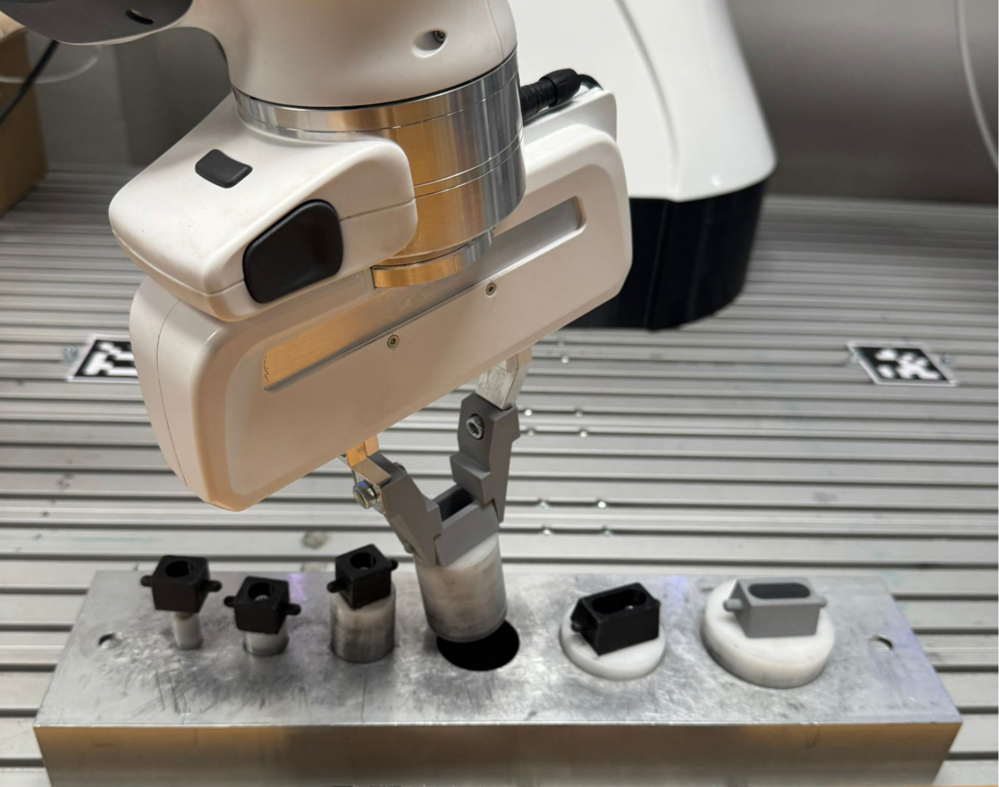
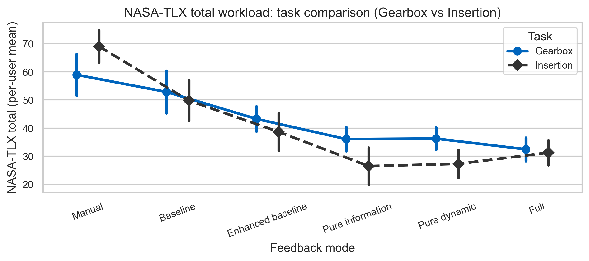
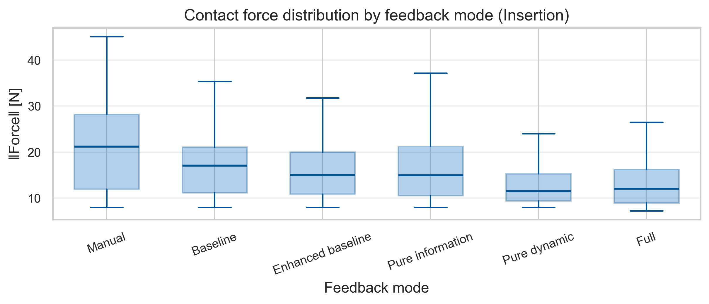
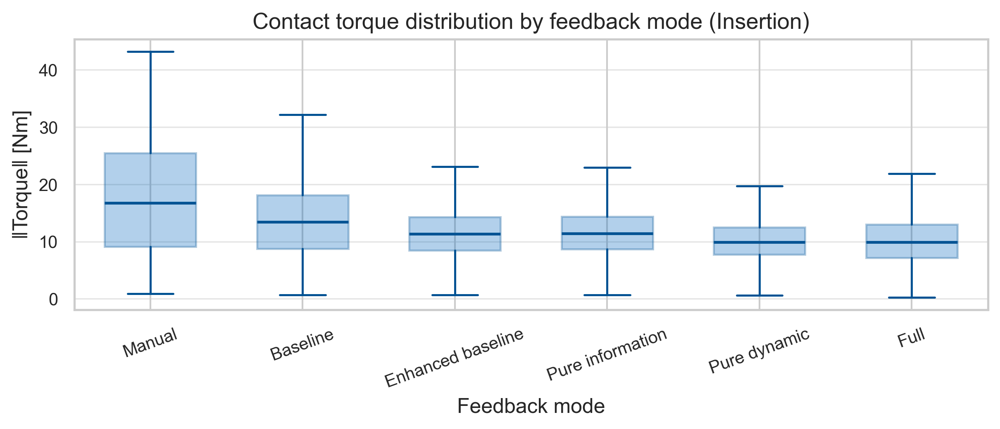

Ten participants, two manipulation tasks, six feedback conditions, roughly three hundred trials. The short answer is yes — and the more interesting answer is that more assistance is not monotonically better.
Nudging Human Decision-Making in Teleoperation Robotics — Design of an Artificial Recommender System for Optimal and Controlled Guidance.
A different machine from the current bimanual system: one Franka Panda with a gripper, a two-degree-of-freedom pan-tilt head carrying a stereo camera and binaural microphones, and a Sigma 7 haptic device on the operator side, over a wired local network.
Every physical device runs as an independent process on the same three-thread pattern: a state thread at 100 Hz handling mode transitions and safety, a data thread up to 800 Hz managing MsgPack-over-UDP messaging, and a control thread at 1 kHz executing the actual control law. Stale packets are discarded rather than queued — teleoperation only cares about the most recent state.
A central supervisor aggregates every device's local state and connectivity into one global system state at 100 Hz. Local state machines retain authority to refuse an unsafe transition, so no single stale command or component fault can produce motion.
The arm runs Cartesian impedance control with null-space posture regulation in a 1 kHz libfranka torque loop. Impedance rather than joint-space tracking for two reasons: it needs no precomputed trajectory, and its compliance is what makes contact-rich teleoperation stable when the operator's input is imperfect.
The head follows the operator's HMD yaw and pitch through a rate-limited planner and an impedance-like joint controller, with stiffness adapted to tracking error so large deviations do not produce aggressive torques.

The system decides, continuously, what to show the operator and how to adjust the interaction dynamics. The interesting part is what it stopped doing.
A Stackelberg LQG formulation, treating assistance as a leader-follower game against a parametric model of the operator. Elegant, and impractical — it demands a detailed model of the human that is hard to identify and harder to keep valid across participants.
A contextual bandit. Rather than modelling the operator, it learns the relationship between observable task context and which feedback configuration is useful, and selects nudges to maximise task-related reward. An intent inference module estimates the current target object and sub-task from object detections and end-effector motion, and that estimate forms part of the context.
Ten participants aged 24 to 29, all novel users of the system. Sessions ran about two hours including briefing, a training task, both evaluation tasks, and breaks. Everyone was briefed on the interface, the tasks, and the TLX questionnaire, told which signals would be recorded, and signed written informed consent. Data was stored under anonymous operator identifiers.
After the training task the experimenter did not interact with participants except for initial instructions and technical faults, keeping conditions comparable.
Task order was randomised across participants. Within each task, feedback-mode order was randomised under the constraint that no mode appeared twice in a row.
Gearbox assembly: each mode twice, twelve trials per participant. Tactile insertion: each mode with three peg diameters, eighteen trials per participant. Metrics were computed per trial, then aggregated per participant and mode before any group-level comparison.


The two tasks stress different things, which is why they behave differently in the results: reaching and sequencing on one side, alignment under contact on the other.
Across both tasks, manual and baseline operation produced the highest workload and the lowest success rates. Every assisted condition improved on them, and the improvement was driven by mental demand, effort, and frustration rather than physical or temporal demand.
| Task | Condition | Completion time | NASA-TLX total |
|---|---|---|---|
| Gearbox | Manual | 302.8 ± 58.6 s | 56.2 ± 21.9 |
| Gearbox | Full | 253.4 ± 50.9 s | 32.9 ± 12.6 |
| Insertion | Manual | 160.9 ± 44.7 s | 70.3 ± 17.8 |
| Insertion | Pure information | 161.2 ± 50.5 s | 26.9 ± 19.4 |
| Insertion | Pure dynamic | 158.4 ± 47.2 s | 27.7 ± 13.1 |
Mode-wise means over per-participant averages, ± standard deviation.



Median contact force falls from roughly 21 N under manual control to about 12 N with dynamic assistance, and the spread narrows sharply — the long upper whiskers under manual and baseline are the forceful corrections that assistance removes. Note that Full sits level with Pure dynamic rather than below it.
Full assistance — informational and dynamic together — was not better than either channel alone. Pure information and Pure dynamic reached the lowest workload scores, with Full in a similar range but no better. The same pattern appears in the contact forces above. Stacking assistance did not compound its benefit.
On the gearbox task, participants who took longer also reported higher workload (r = 0.57). On insertion, that relationship essentially vanished (r = 0.12): the assisted conditions moved almost straight down in workload with barely any change in completion time.
In a precision-limited task, perceived difficulty is not driven by how long the trial takes. Interaction quality — forces, smoothness — tracks it far better than speed.
Small, with long and demanding sessions. Some operators reported mild motion sickness or arm fatigue toward the end, which may have affected later trials.
A single arm, haptic device, and VR system in one laboratory. How far the results transfer to other hardware, tasks, or user populations is untested.
This measures what nudging does to the human. Whether the resulting demonstrations train better robot policies is a different question — and the one the current work is built to answer.